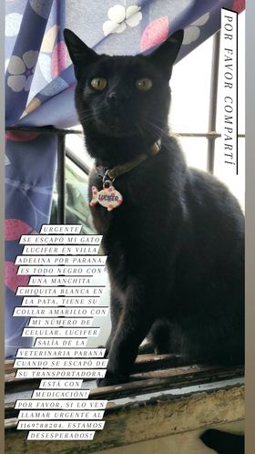

Perrita hembra encontrada
Encontrada el el 25/12 en Country Campo Chico, Pilar.
Es todo negro con una manchita blanca en su pata, collar amarillo con número de celular
Contacto: Contacto 11 6445 9080.(@gishebar) ig

Lucifer
Última vez visto en: Villa Adelina, por Paraná
Es todo negro con una manchita blanca en su pata, collar amarillo con número de celular
Contacto: contacto@ejemplo.com

Lucifer
Última vez visto en: Villa Adelina, por Paraná
Es todo negro con una manchita blanca en su pata, collar amarillo con número de celular
Contacto: contacto@ejemplo.com